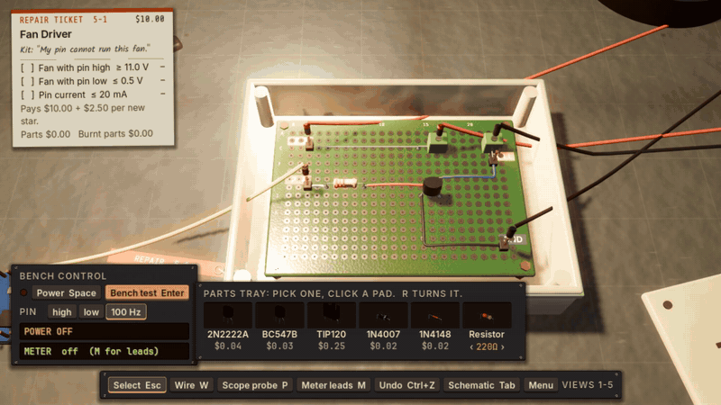
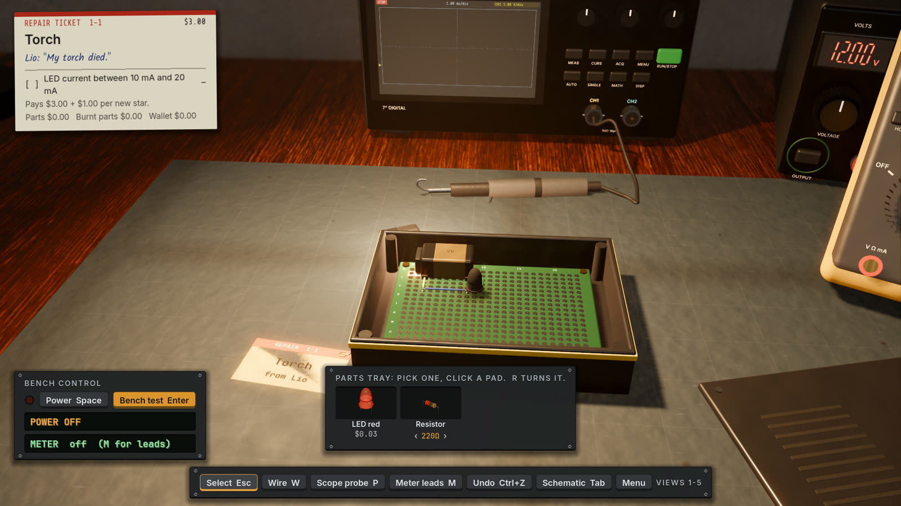
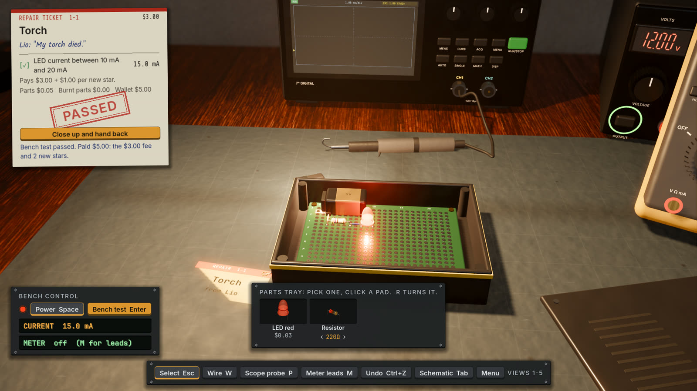
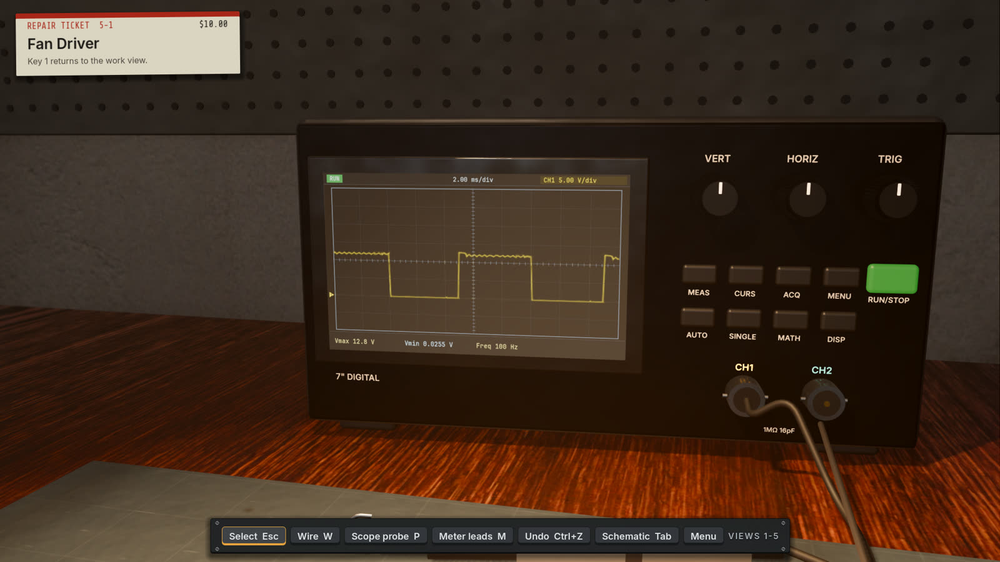
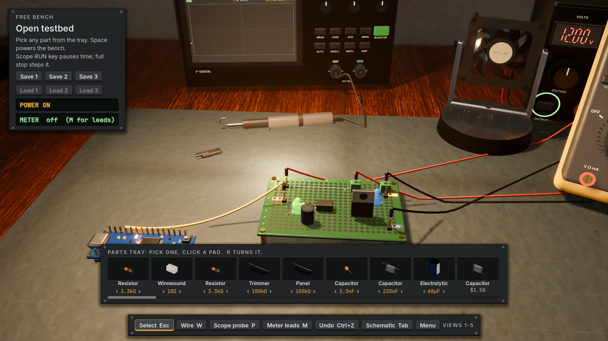

CIRCUITS
A repair bench where real circuits are the rules.
Customers bring broken devices: a torch, a bike light, a fish-tank heater, a toy car, a desk fan. Open the case, probe the old work with the meter and the scope, fix it with real parts and hand it back. Burn a part and it comes out of your pay, and the game tells you why it burned, with the numbers from your own circuit.
Pre-alpha, free, Linux x86_64. Chapter 1 and the fan repair play on the new 3D workbench; chapters 2 to 5 play in the classic 2D stall. No sound and no gamepad on the workbench yet.

How it plays




Honest by design
Every volt and amp comes from a circuit simulator. The interface computes no numbers of its own. The bench test fails with the power off, and a burnt part stays burnt.
Five chapters are built (23 tickets): Ohm's law and LEDs, dividers and bridges, capacitors and time constants, rectifiers and regulators, transistors as switches and amplifiers. The wiki lists every ticket.